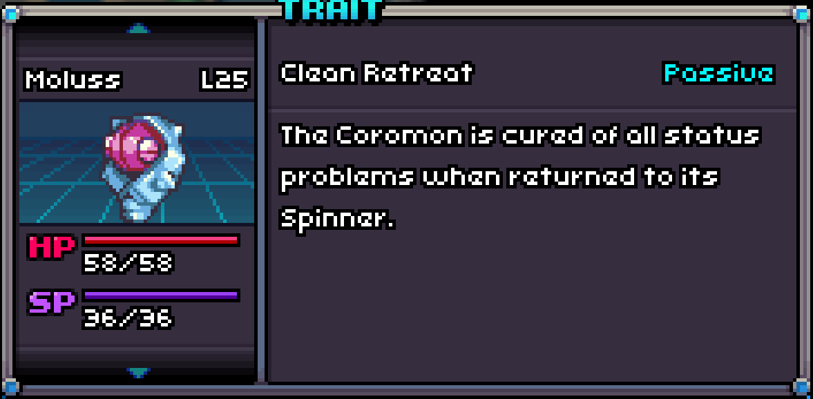
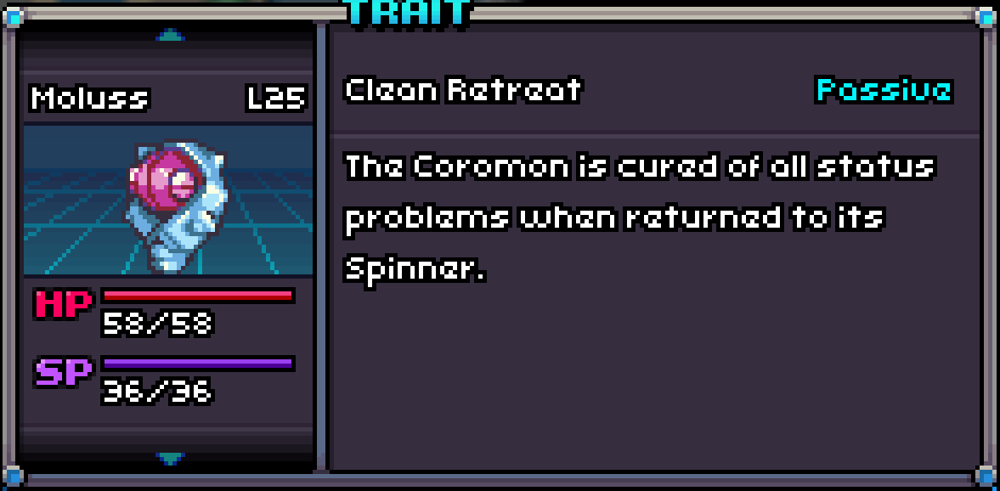

A Froshell with Clean Retreat!
Clean Retreat
Clean Retreat is a Passive Trait that cures all status (Burn, Curse, Poison, Sleep, Shock, Freeze, Haziness) of a Coromon when it exits battle.

A Froshell with Clean Retreat!
Clean Retreat is a Passive Trait that cures all status (Burn, Curse, Poison, Sleep, Shock, Freeze, Haziness) of a Coromon when it exits battle.
| # in Corodex | Name | Type | Traits | HP | Speed | Attack | Defense | Sp. Att | Sp. Def |
|---|